Compte rendu du 2 eme scénario
Création du tableau Trello
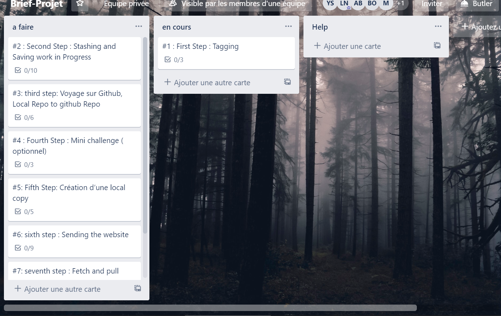
First Step : Tagging
- Déplacez-vous sur la branche Principale
- Créez un TAG avec un nom V1.0 et un commentaire ‘ REALEASE 1.0 ‘
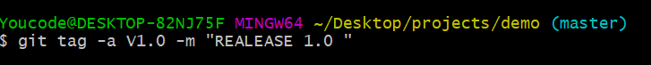
- Affichez les informations sur le TAG
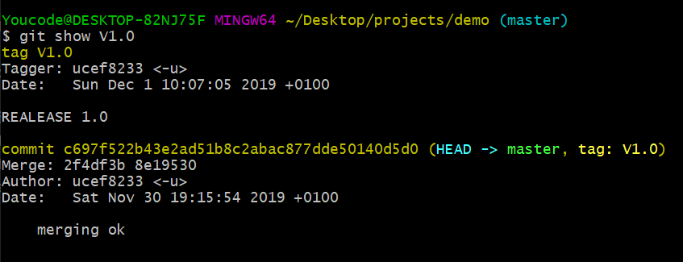
- D’après vous un TAG il sert à faire quoi au juste ?
ca denno un eetiquette avec un numero de vertion a un groupe de commit
Second Step : Stashing and Saving work in Progress
- Modifiez le fichier README.md , ajoutez une ligne
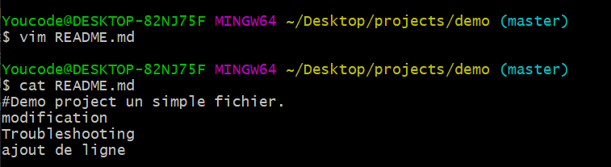
- Tapez la commande git Stash ?
- Expliquez le fonctionnement de la commande git Stash
un peu pour travailler sur autre chose. Le problème est que vous ne voulez pas faire un commit de travaux
à moitié faits juste pour pouvoir revenir sur ce point plus tard. La réponse à cette question est la cachette git
git-stash
- Tapez la commande git stash list
- Qu’est-ce que vous constatez ?
que la modification effectuer sur le fichier reademe.md n'est pas tracker
- Modifiez le fichier « Licence.txt », ajoutez la ligne « APACHE 2.0 »
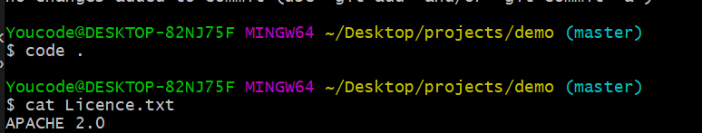
- Exécutez la commande « git stash pop » ?
- Qu’est-ce que vous constatez ?
on constat que la commande git stash pop sert a recuperer le stash effectuer et qu'on peux le recuperer que sur un ripot clean
et que les fichier dans stash ce prend pas en compte dans les add et commit
third step: Voyage sur Github, Local Repo to github Repo
- Créez un repo github public sans ajouter le fichier README.md
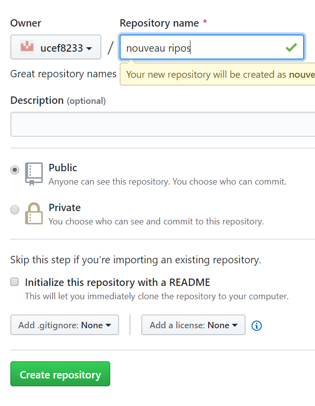
- Créez le remote en https
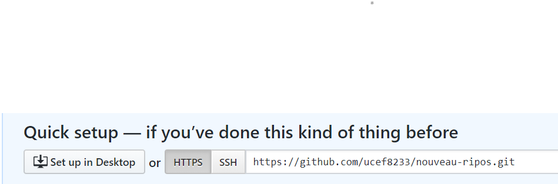
- Examinez le remote
le remot git remote add origin https://github.com/ucef8233/nouveau-ripos.git ce compose du lien github nom d'utulisateur et nom du ripos
- Pushez le tous à travers la commande : git push –u origin master - -tags
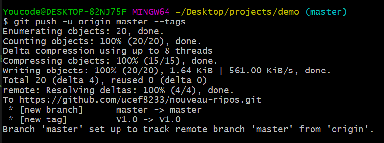
- Expliquez la commande ?
la commande sert a envoyer le ripo du git local vers le github
- Expliquez les options –u et - -tags ?
-u pour repporté toutes les modifications
_tag pour push les tag non add
Fourth Step : Mini challenge ( optionnel)
- Créez un fichier sous git nommé .SSH
- Déplacez-vous dans le fichier .SSH
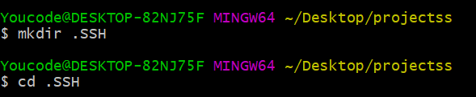
- Maintenant à vos mains : Créez une authentification sécurisé SSH entre votre repo local et votre repo distant
(aide : Ssh –keygen-t rsa –C ' email’).
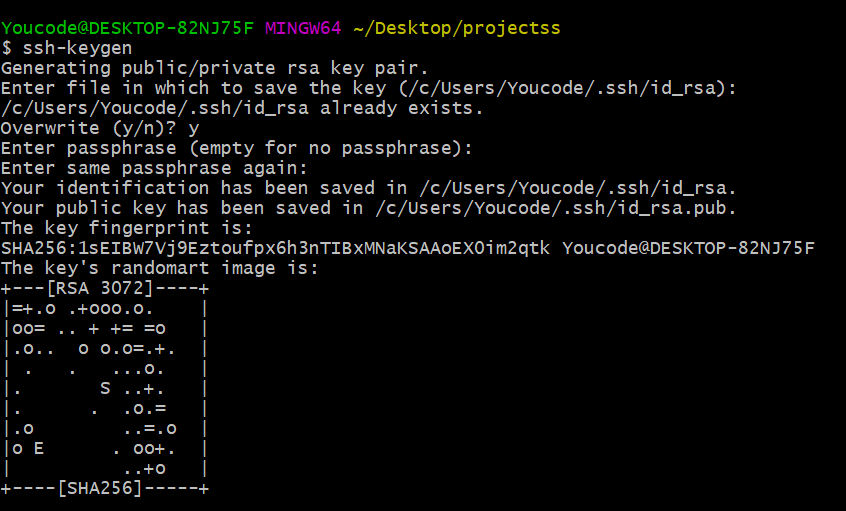
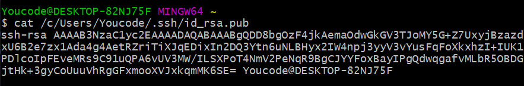
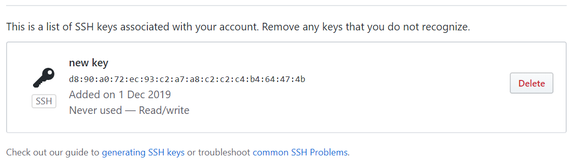
Fifth Step: Création d’une local copy
- Sur github créez un autre repo nommé ( Monsiteweb)
- Ajoutez à l’arboresence toujours sur github le fichier .gitignore et un fichier licence.txt ‘APACHE 2.0 ‘
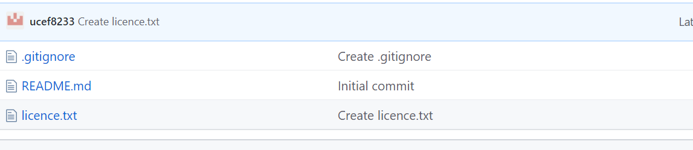
- Créez un clone github vers le local sous le nom (Monsiteweb-local)
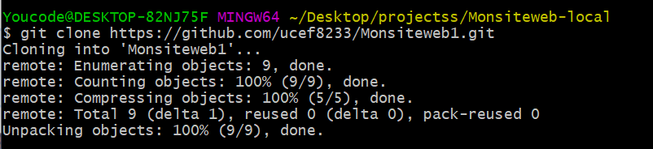
- Vérifiez si le clone est créé.
sixth step : Sending the website
- Télécharger le site web depuis le lien suivant : http://www.initializr.com/
- Sur le site telecharger un site bootstrap avec le fichier .htaccess et le fichier 404.html
- Copiez le site télécharger dans votre repo local à travers une seule commande :
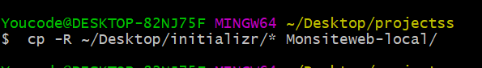
 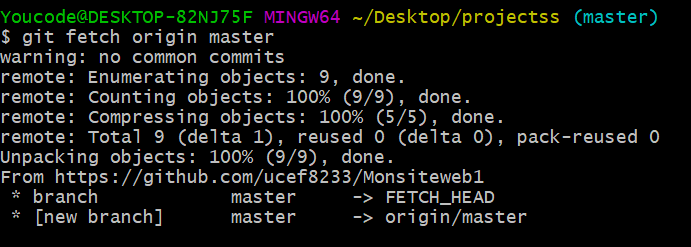
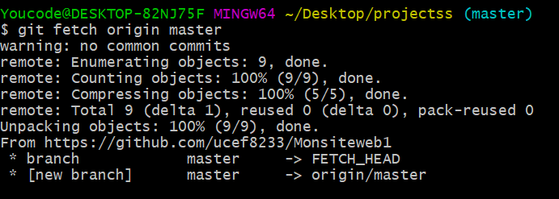